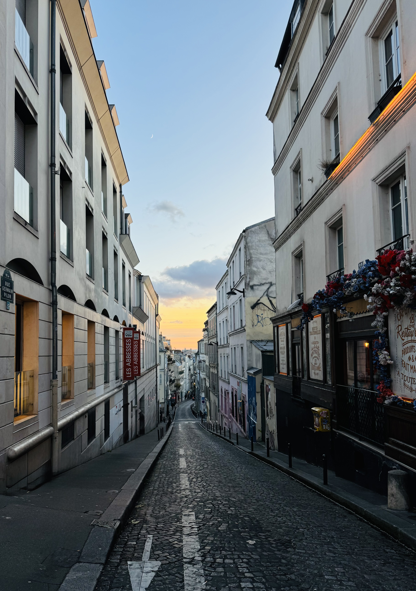
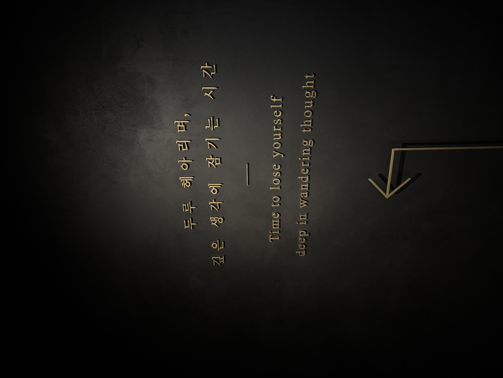
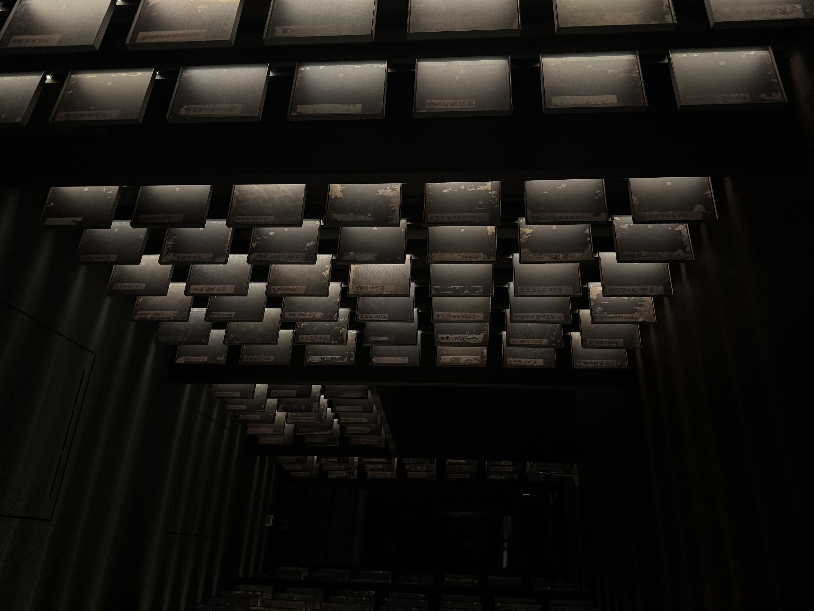
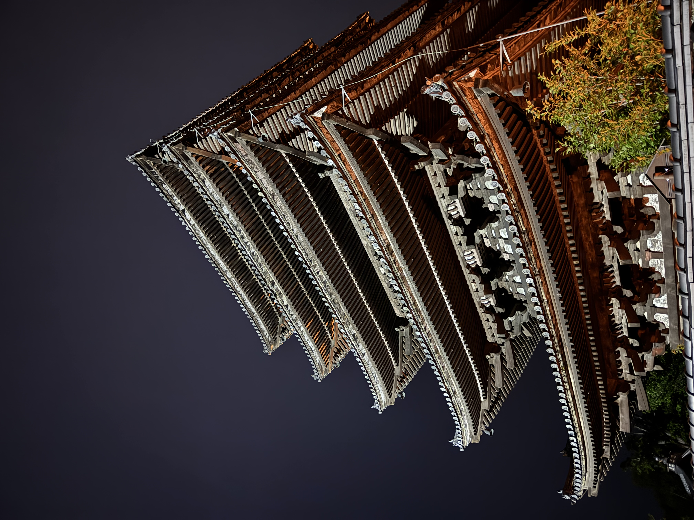
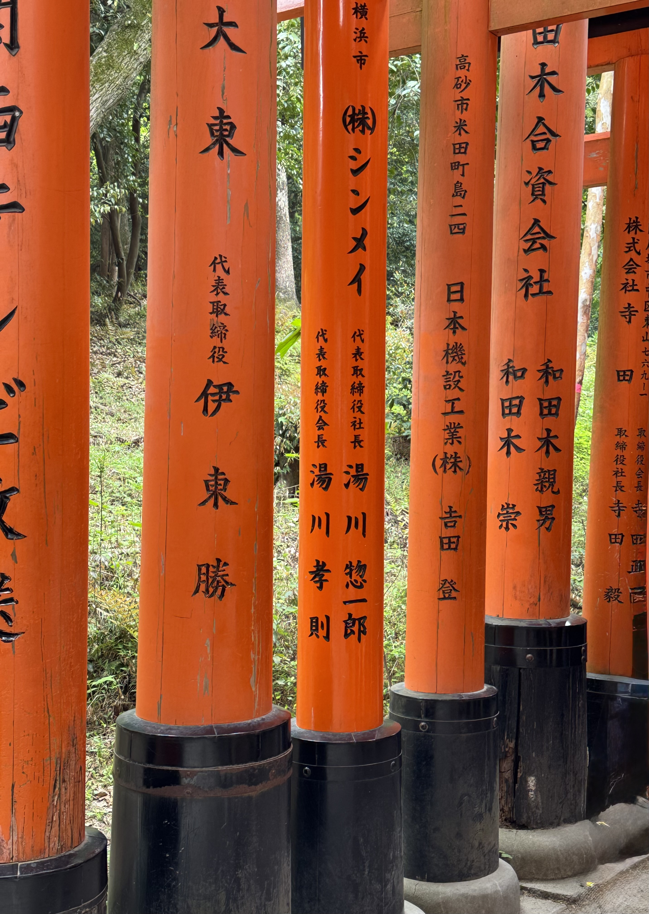
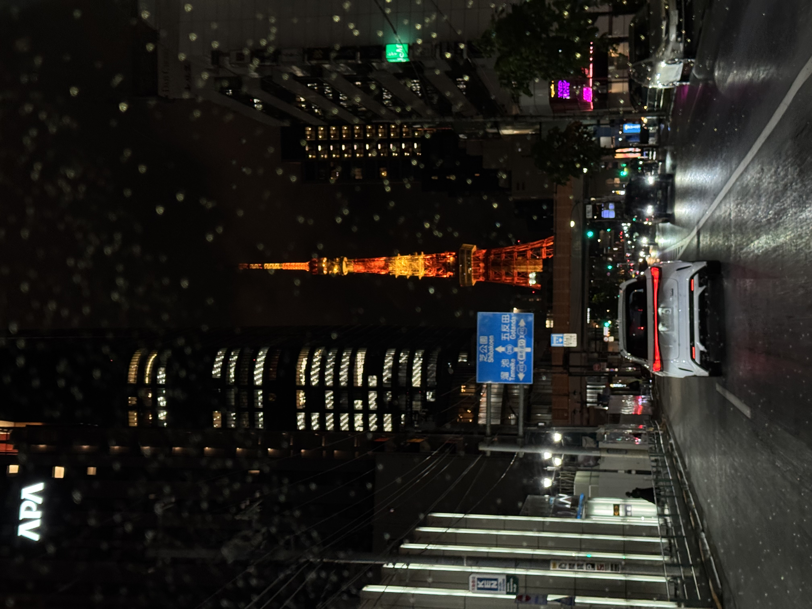
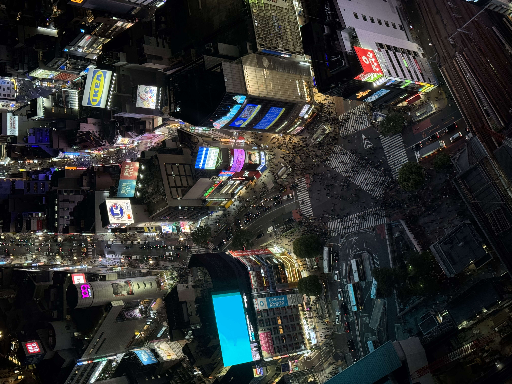
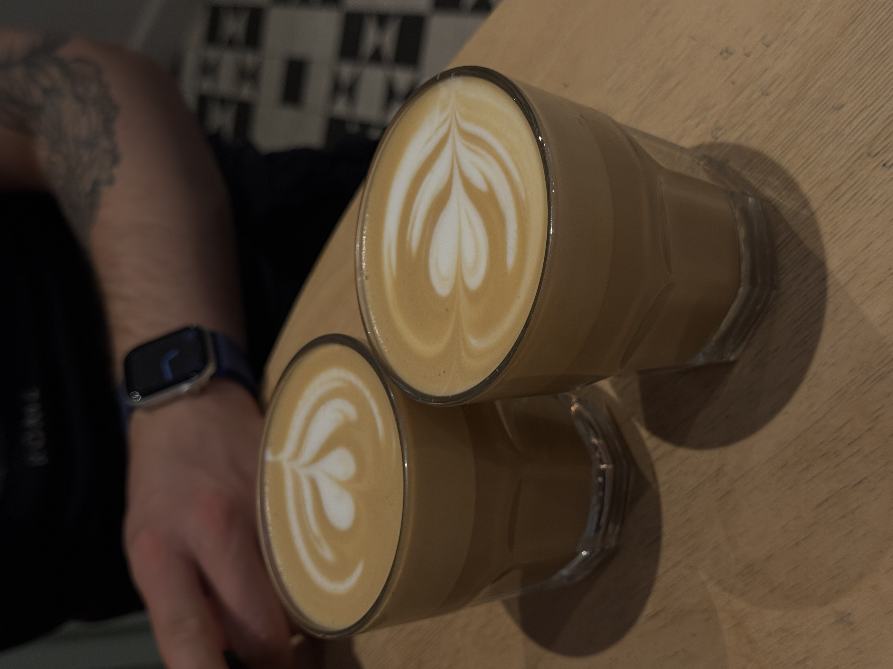
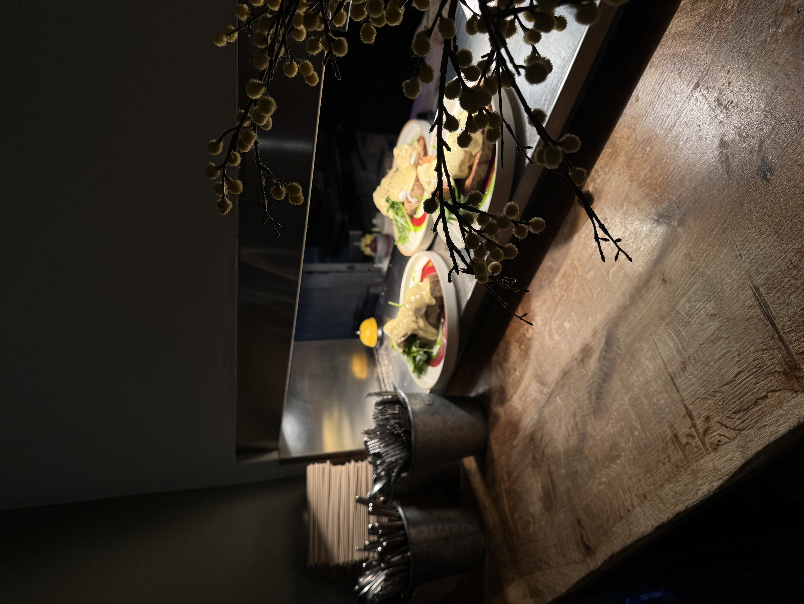
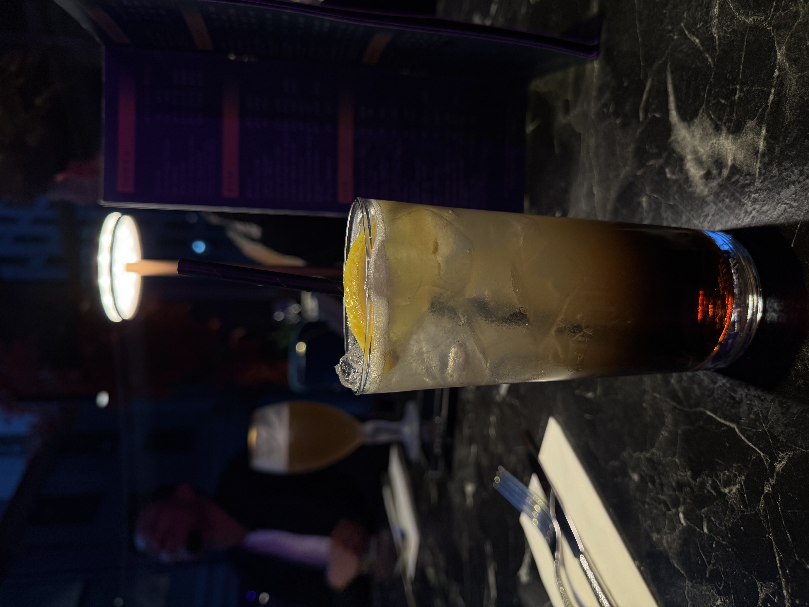

Photographs
frames i took

montmartre, paris

louis vuitton, champs-elysées, paris

a room of quiet contemplation, national museum of korea, seoul

a room of quiet contemplation, national museum of korea, seoul

starfield library, coex mall, seoul

ura-namba, osaka

dōtonbori canal, osaka

yasaka pagoda, gion, kyoto

fushimi inari taisha, kyoto

tokyo tower, tokyo

shibuya crossing from shibuya sky, tokyo

flat whites, keswick, lake district national park

homeground coffee + kitchen, windermere, lake district national park

long island iced tea, the oligarch, milton keynes